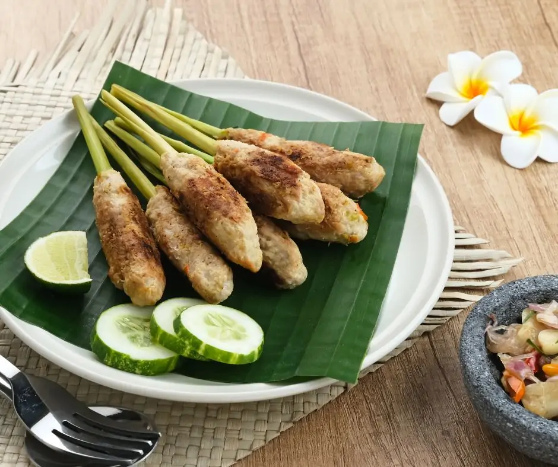
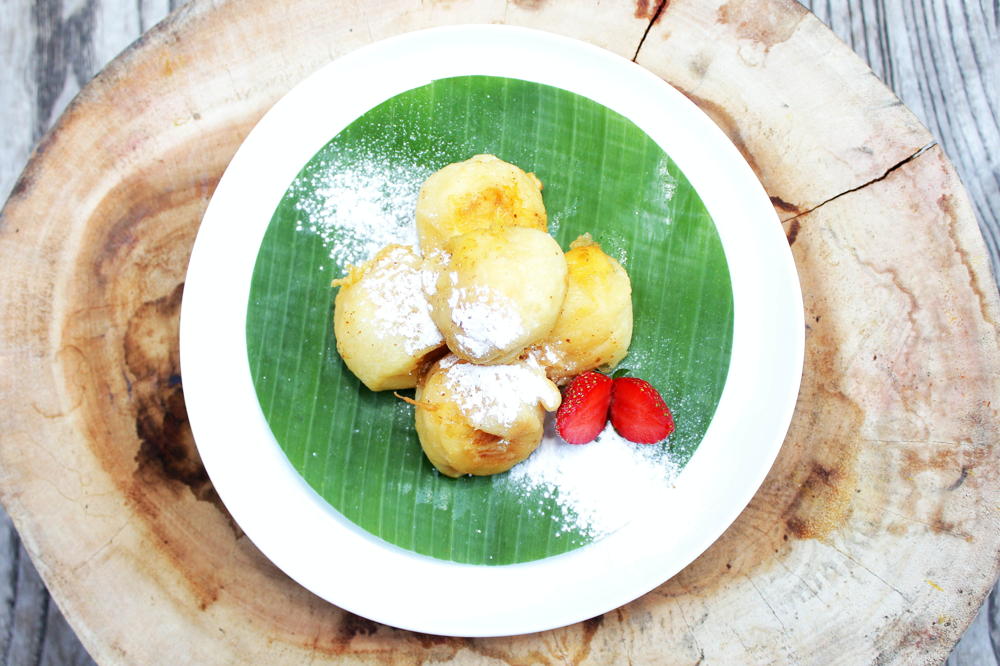
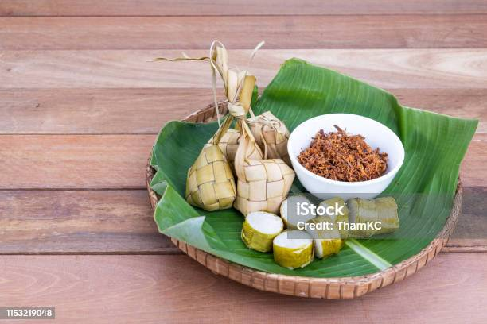
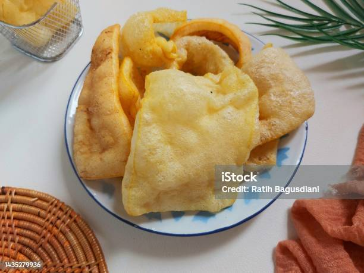
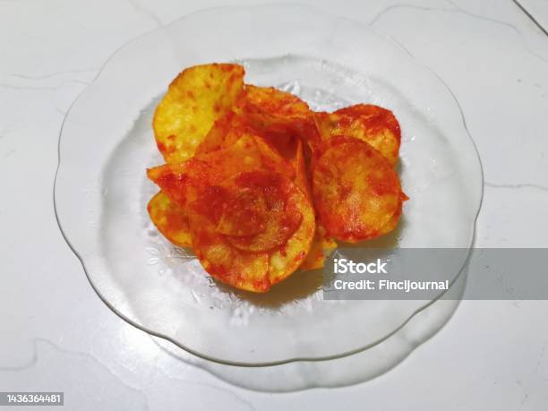
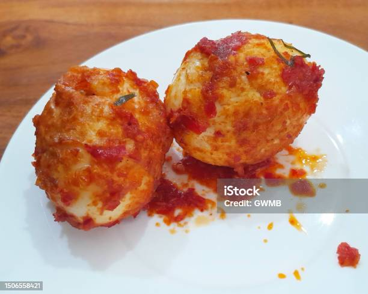
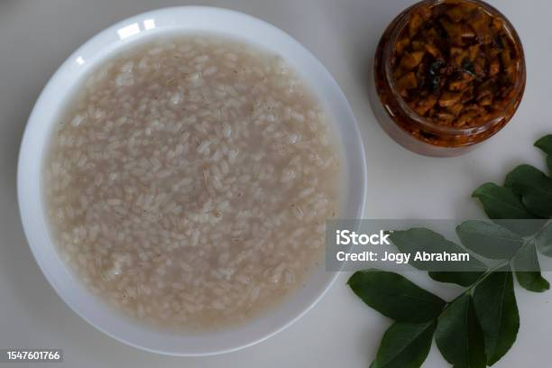

Gallery
Entrée
Explorez nos délicieuses entrées indonésiennes, chacune étant une explosion de saveurs et de textures authentiques. Nos entrées sont soigneusement préparées pour vous offrir un avant-goût de la riche cuisine indonésienne. Que vous soyez à la recherche d'une entrée légère pour ouvrir votre appétit ou d'une expérience culinaire unique, nos options d'entrées sauront satisfaire vos papilles gustatives.
Les Sat Lilit (enroulé) sont des variantes du Satay qui sont des brochettes de viandes aromatisées aux épices. On retrouve souvent les Sat Lilit à la viande de poulet ou de porc enroulée autour de bâtons de bambou. Vous pourrez retrouver le Sat mélangé avec de la noix de coco râpée, du lait de coco, citron…
Le tapai (également tapay), est une préparation fermentée traditionnelle de riz ou d'autres féculents, et se trouve dans une grande partie de l'Asie du Sud-Est, en particulier dans les cultures austronésiennes et dans certaines parties de l'Asie de l'Est. Il fait référence à la fois à la pâte alcoolisée et à la boisson alcoolisée qui en est dérivée.
Le lemang est un aliment traditionnel préparé à partir de riz gluant, de lait de coco et de sel, cuit dans un tige de bambou vide tapissé de feuilles de bananes pour éviter que le riz ne colle au bambou. Il est couramment trouvé dans Asie du Sud-Est océanique, en particulier à Brunei, en Indonésie, en Malaisie et à Singapour.
Le "Karupuak Jangek" est une délicieuse spécialité de la cuisine indonésienne, plus précisément de la région de Padang, située sur l'île de Sumatra. Il s'agit de croustilles de peau de bœuf frites, un mets très apprécié pour son goût savoureux et sa texture croustillante.
Si vous êtes un amateurs de Snak épicés : Le "Karupuak Balado" est une autre spécialité de la cuisine indonésienne, originaire de la région de Padang à Sumatra. Il s'agit de croustilles épicées à base de peau de bœuf, qui offrent une combinaison irrésistible de croustillant et d'épices.
Le Sambal Telur est une entrée savoureuse de la cuisine indonésienne. Il est préparé en faisant durcir des œufs puis en les nappant d'une sauce sambal pimentée, qui est une base de la cuisine indonésienne. La sauce sambal est préparée en mélangeant des piments, de l'ail, de l'oignon, du tamarin, du sucre, et d'autres épices, créant ainsi une sauce épicée, parfumée et légèrement sucrée
Le "Bubur Kampiun" est un plat traditionnel de bouillie de riz sucrée originaire d'Indonésie. Cette délicieuse bouillie est souvent préparée pour le petit-déjeuner ou en tant que dessert, et elle est appréciée pour sa saveur douce et réconfortante.
